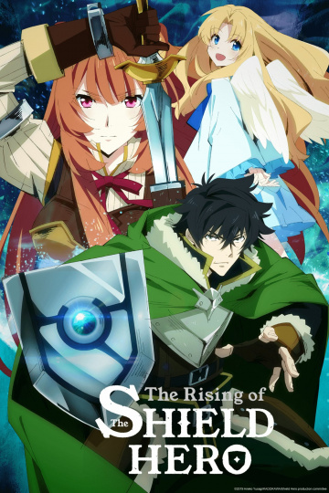

Fairy Tail
 Описание: Фейри Тейл – знаменитая на весь мир своими безбашенными выходками Гильдия волшебников по найму.
Молодая волшебница Люси была уверена, что, став одним из её членов, попала в самую замечательную на свете Гильдию… до тех пор,
пока не познакомилась со своими камрадами – взрывным огнедышащим и сметающим всё на своём пути Нацу, летающим говорящим котом Хэппи,
эксгибиционистом Греем, занудой-берсерком Эльзой, гламурным и любвеобильным Локи… Вместе им предстоит одолеть немало врагов и пережить
Описание: Фейри Тейл – знаменитая на весь мир своими безбашенными выходками Гильдия волшебников по найму.
Молодая волшебница Люси была уверена, что, став одним из её членов, попала в самую замечательную на свете Гильдию… до тех пор,
пока не познакомилась со своими камрадами – взрывным огнедышащим и сметающим всё на своём пути Нацу, летающим говорящим котом Хэппи,
эксгибиционистом Греем, занудой-берсерком Эльзой, гламурным и любвеобильным Локи… Вместе им предстоит одолеть немало врагов и пережить
Black Clover
 Описание: У главного героя, Асты, сироты, с детства есть мечта. Он стремится стать великим архимагом.
С юности он тренировался, чтобы стать первым из всех магов и получить гримуар архимага! Но в итоге....
ему достается вовсе не тот гримуар, который он ожидал получить.
Путь героя к становлению легендой начинается.
Описание: У главного героя, Асты, сироты, с детства есть мечта. Он стремится стать великим архимагом.
С юности он тренировался, чтобы стать первым из всех магов и получить гримуар архимага! Но в итоге....
ему достается вовсе не тот гримуар, который он ожидал получить.
Путь героя к становлению легендой начинается.
Tate no Yuusha no Nariagari
 Описание: Иватани Наофуми, "Героя Щита", призвали в параллельный мир, где его ждали деньги и слава... но затем его предали. Благодаря жестокой лжи и презрению сильные мира сего предстают перед ним врагами. Оклеветанный преступником и потерявший веру в людей Наофуми встречает девочку-рабыню... Неужели после такой катастрофы на его жизненном пути именно она — то, в чём он так нуждается?! Потрясающая история о том, как парень выбирается из пучины отчаяния!
Shingeki no Kyojin
 Описание: "Давным-давно человечество было всего-лишь «их» кормом,
до тех пор, пока оно не построило гигантскую стену вокруг своей страны.
С тех пор прошло сто лет мира и большинство людей жили счастливой,
беззаботной жизнью. Но за долгие годы спокойствия пришлось заплатить огромную цену,
и в 845 году они снова познали чувство ужаса и беспомощности — стена,
которая была их единственным спасением, пала. «Они» прорвались.
Половина человечества съедена, треть территории навсегда потеряна..."
Описание: "Давным-давно человечество было всего-лишь «их» кормом,
до тех пор, пока оно не построило гигантскую стену вокруг своей страны.
С тех пор прошло сто лет мира и большинство людей жили счастливой,
беззаботной жизнью. Но за долгие годы спокойствия пришлось заплатить огромную цену,
и в 845 году они снова познали чувство ужаса и беспомощности — стена,
которая была их единственным спасением, пала. «Они» прорвались.
Половина человечества съедена, треть территории навсегда потеряна..."
Dororo
Описание: Дороро, юный вор-сирота, попадает в компанию Хяккимару, могучему охотнику на демонов. До рождения Хяккимару его отец, алчный лорд, заключил договор с 48 демонами: в обмен на власть над страной он отдал каждому из них по частице своего нерожденного сына. Хяккимару родился без рук, ног, глаз, ушей, носа, губ, живота, хребта и с трудом походил на человека, поэтому его отец приказал выбросить ребенка в реку. Малыша спас и вырастил доктор Дзико, а также сделал протезы недостающих частей тела. С каждым убитым демоном Хяккимару возвращал часть своего тела. Теперь он вместе с Дороро путешествует по раздираемой войной и демонами стране.